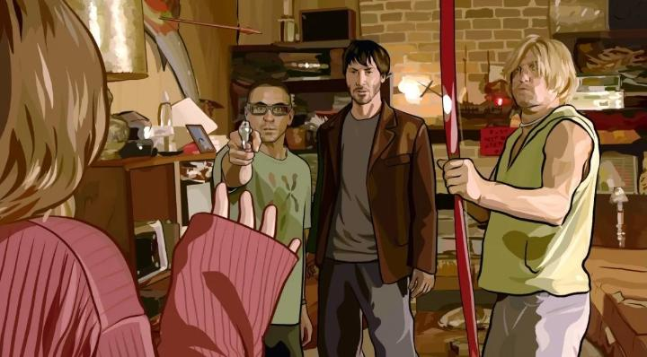
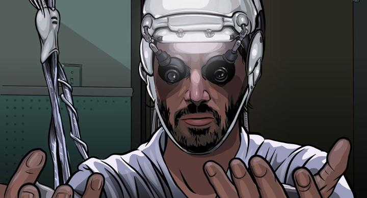

When it comes to American adult animation, particularly from the 2000's, it's hard not to remember 2006's "A Scanner Darkly," a sci-fi crime thriller with an iconically memorable rotoscope style. It was directed by Richard Linklater, and is an animation follow-up to his early-career, award winning "Waking Life" that used similar techniques. Both of which I've had on DVD for a long while, but only after revisiting "Darkly" in a recent screening at a local indie cinema, was I prepped again to write a formal review. Even live-action film fans have reason to give "Darkly" a shot; after a long-running and ongoing career, Linklater has one of the most interesting directoral filmographies, and this film features some big stars, including Keanu Reeves (shortly after finishing his run in the "Matrix" franchise), Robert Downey Jr. (shortly before his stardom status from "Iron Man"), Woody Harrelson and Winona Ryder. Based on the novel of the same name by Phillip K. Dick, this is a story about an undercover cop fighting the war on drugs. Set in a fictional near-future (but recognizable in 2006, and perhaps even more so decades later), the crime force is investigating the pervasive drug "Substance D," and trying to track down how it's getting to the streets. Reeves plays Bob Arctor, a drug user that spends his days casually hanging around a small friendgroup of users, one a girlfriend, another a conspiracy theorist, another a zoned-out dude, and another suffering hallucinations and twitches signaling his being too far gone. Bob is secretly the cop. He wears a specialty suit that camouflages his appearance and voice, both to protect himself outside, but more so to stay annoymous within the task force - all figures of interest, including "Bob," are suspects. Increasingly, the task force adds extra surveillance through camera and voice recordings of the house they hang out in, and require Bob to study the footage each night, including of himself. All the while, Bob's mental health is under increasing scrutiny with the task force (doctors suggest the right and left sides of his brain are conflicting with each other). As the story progresses, we see the effects of the drugs, and are meant to question to what lengths it is OK for an undercover cop to participate, and whether it's OK to sacrifice them to track down the larger evil at work. Poignantly, the end credits quotes Phillip's list of friends he dedicated the novel to, most of whom have died early through drug use. That poignancy is the movie's strength, but in the context of the story, could have been conveyed in a short story, not a full-length novel or film. But for much of the film, "A Scanner Darkly" is effectively a stoner comedy. We're watching a group of actors (frankly, some of whom famously have experience with drug use) laugh and bicker with each other, spouting random news stories and conspiracies they've heard, sometimes shouting and threatening to kill each other before settling down seconds later, forgetting what they were talking about. It kept me on edge, knowing I was supposed to laugh while worried at the constant potential for sudden violence. I suppose this provides insight to the life of a junkie, but I'm not particularly interested in this aspect of the story. And nothing of particular consequence happens during these aimless scenes... it just drags the movie down. The science fiction aspects are largley meaningless, and there's a lot to sit through to get to the more interesting philisophical questions.

By far, the main reason to watch "A Scanner Darkly" is for the unique animation. It uses rotoscoping of live-action scenes, and specifically uses vector-shapes to draw the subjects. This partly allows quicker keyframing, and allows for smoother interpolation by morphing those shapes (think Flash animation). For this type of story, and these types of acting performances, it's fair to question whether animation was really necessary for this movie, over a purely live-action film. There are moments when it proves to be worthwhile. The unique morphing camouflage suit is something I could only imagine being done this way, even though the suit's purpose in the story is superficial. There are multiple scenes of hallucinations, usually involving bugs, that blend perfectly through the use of this animation style. But most of all, it just presents this uncanny appearance that suggests altered perception of the world. This would be an interesting movie to watch under the influence, but even sober, I can imagine what such an experience is like, simply through watching this film as is. That all sums up to "A Scanner Darkly" being an interesting film, but just one I'm not particularly attached to. The animation style is experimental and unique, and well suited for this story, although whether the rotoscoping looks as good as a more traditional hand-crafted style is another matter. There is a beauty to the philosophical drama of the story, but it's overshadowed by the majority of the scenes being of stoners acting dazed and confused on an old couch. Of course, "stoner-comedy" is a popular genre, and alternatively, negative experiences with drug addition both personally or through family and friends effects nearly everyone. Your personal interests or lifestyle might help this resonnate more. - "Ani" More reviews can be found at : https://2danicritic.github.io/ Previous review: review_A_New_Dawn Next review: review_A_Silent_Voice